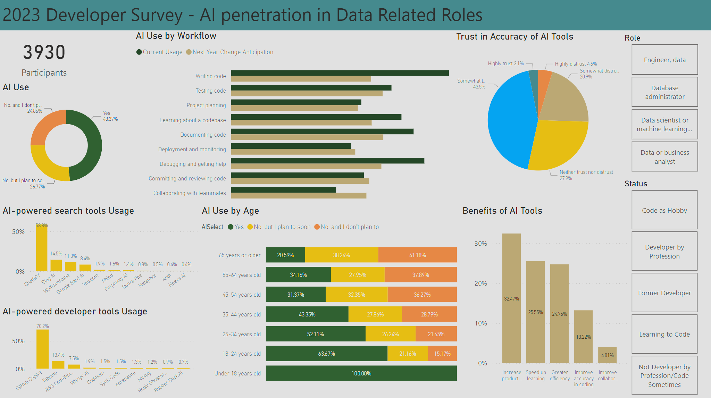

Exploring AI in the Developer Community
A Deep Dive with Power BI
Project Dive-In
Hey everyone! 🚀 So, I dove headfirst into this massive survey by Stack Overflow from May 2023, where a whopping 90,000 developers spilled the beans on everything from their coding habits to their favorite pizza toppings. Okay, maybe not pizza, but they did talk about their education, job status, salary, and the tech they use - like programming languages, databases, cloud platforms, you name it. You can get a bird's-eye view of the developer's world, but let me tell you, the AI bits really caught my eye.
I zeroed in on the data wizards of our time - the data scientists and machine learning specialists, data and business analysts, database administrators, and data engineers. Why? Because I was super curious about how AI is weaving its way into their world. Who's boarding the AI train, how much they're betting on it, the perks of using AI, and all that jazz.
I performed the analysis on this with Power BI Desktop, and since I'm rocking the free version, I can't share it directly on Power BI services. But fear not! If you're up for a ride, grab the .pbix file and all the necessary .csv tables I cooked up here, along with the data files from Stack Overflow, right here. Copy all files in one folder and open the .pbix file in Power BI Desktop, and you're golden.
After wrestling with the data (ETL-style) and getting it into Power BI, I whipped up this dashboard. Picture this:

- In the sea of 90,000 responses, our heroes, the data-focused folks, are a squad of 3,930. Out of them, 48% are already buddying up with AI tools, and another 26% are eyeing to join the club soon.
- AI Use by Workflow: It turns out, AI's big gigs are in 'Writing Code', 'Debugging', and 'Documenting Code'. And guess what? Our data pals predict even more AI action in their workflow over the next year, especially in debugging, documentation, and testing.
- Trust in AI Tools: The trust meter shows 46% of the participants either trust or somewhat trust AI's accuracy, while 25% are giving it the side-eye. Database admins are handing out trust cookies, whereas data engineers are a tad skeptical.
- AI-powered Search Tools: ChatGPT is the reigning champ, snagging about 58.8% of users. Bing AI, WolframAlpha, and Google Bard trail behind, in that order.
- AI-powered Developer Tools: GitHub Copilot is leading the pack, with more than 70% of devs on board. Tabnine and AWS CodeWhisperer are also in the race, holding their own.
- AI Use by Age: The younger the dev, the keener they are on AI. A whopping 84% of those 18-24 are either using AI tools or planning to, compared to about 60% of the 35-44 crowd.
- Benifits of AI: According to our survey stars,the biggest bennifits of AI lies are 'boosted productivity', 'speed up learning', and 'greater efficiency'.